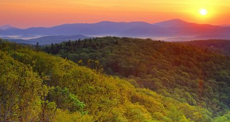
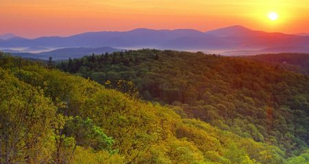
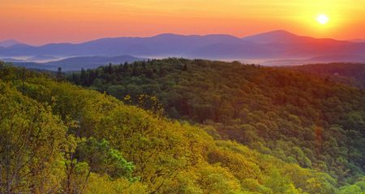

Grandfather Mountain has been an icon in North Carolina’s landscape for generations, offering stunning scenery and unmatched ecological diversity. This state park opens the mountain’s 2,456-acre backcountry to spectacular hiking and backpacking. The park is known for some of the South’s most severe weather and challenging terrain, with trails that have hikers scrambling along cliffs and up ladders. Access to 12 miles of trails and backpack camping sites is generally from the Profile Trailhead on NC 105 or trailheads along the adjacent Blue Ridge Parkway. However, trails can also be reached from the park of the Grandfather Mountain Stewardship Foundation (which includes the mile-high swinging bridge and other attractions) and there is a fee for this access.
